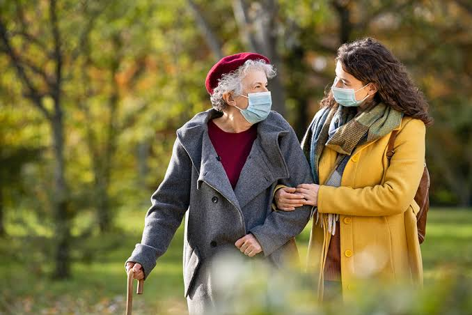

Our vision is to help create a future where everyone feels welcome, respected, and included. We want to encourage people to care for one another, listen with understanding, and treat others with respect, no matter who they are or where they come from. We hope to inspire children, families, and communities to make kindness a natural part of everyday life. By learning to support one another and showing compassion, we can build stronger relationships and create places where everyone feels safe, valued, and able to belong.